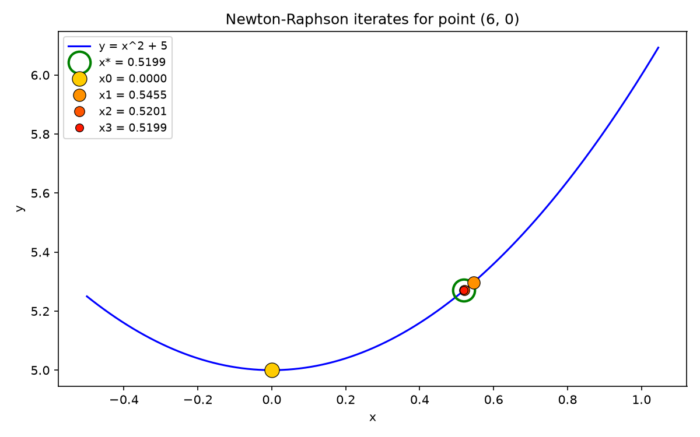
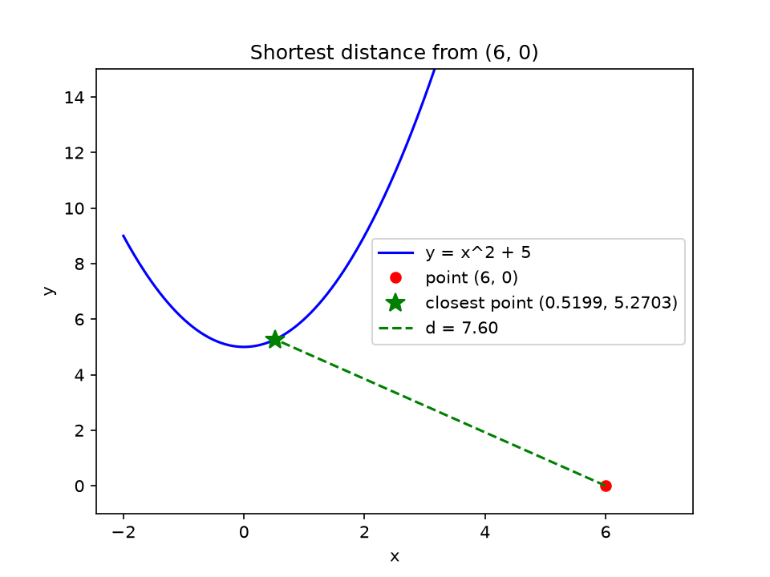
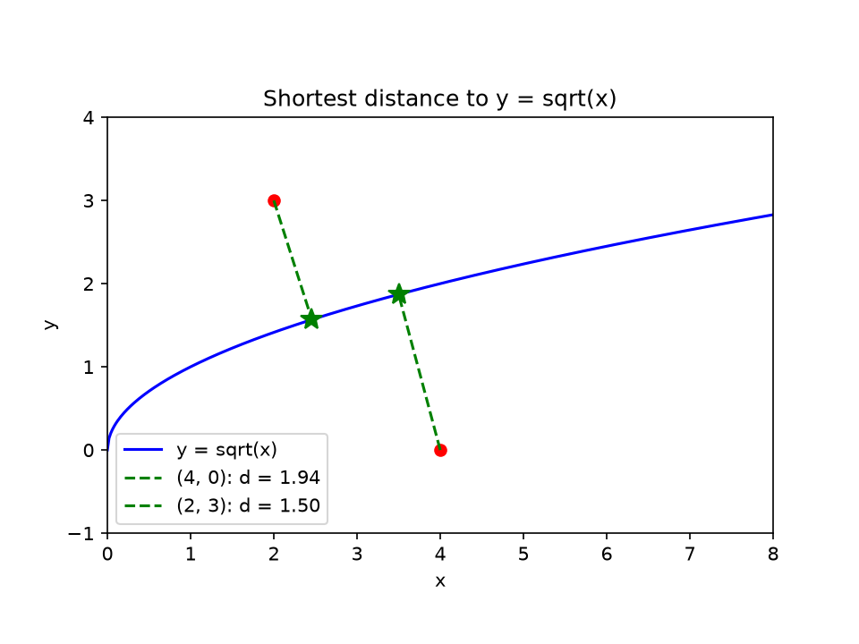
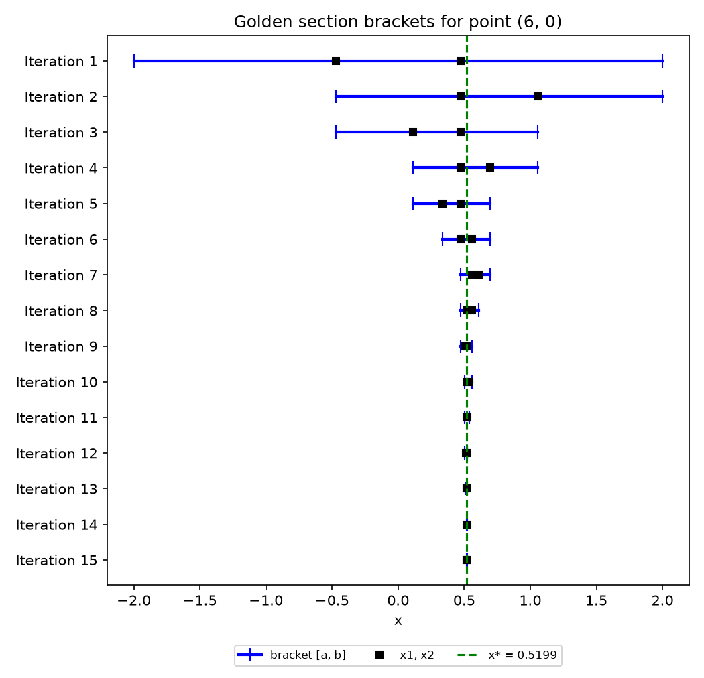
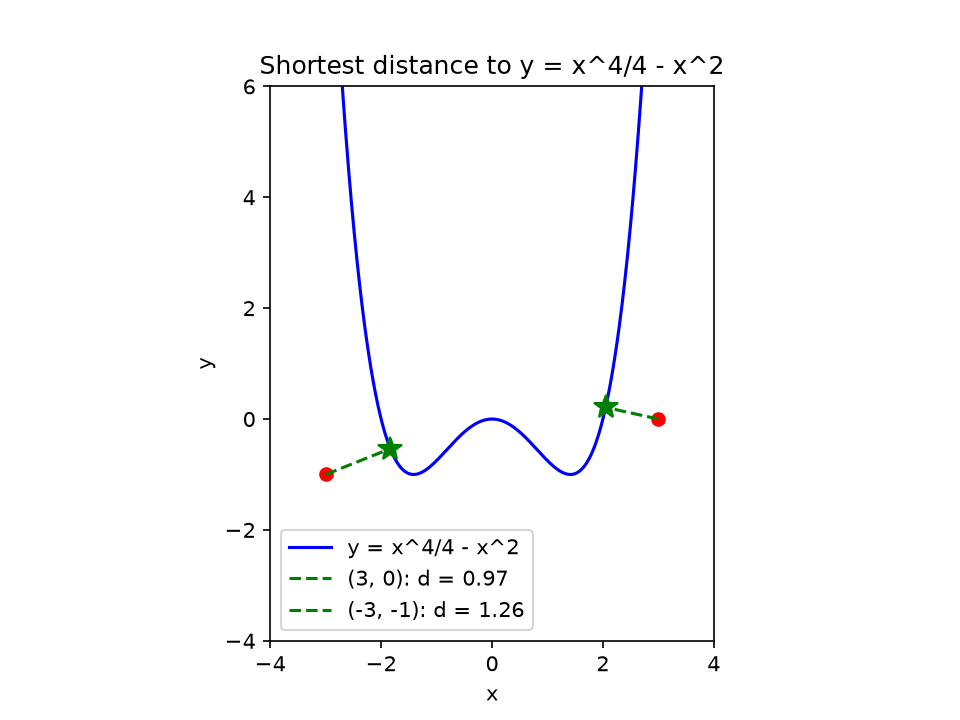
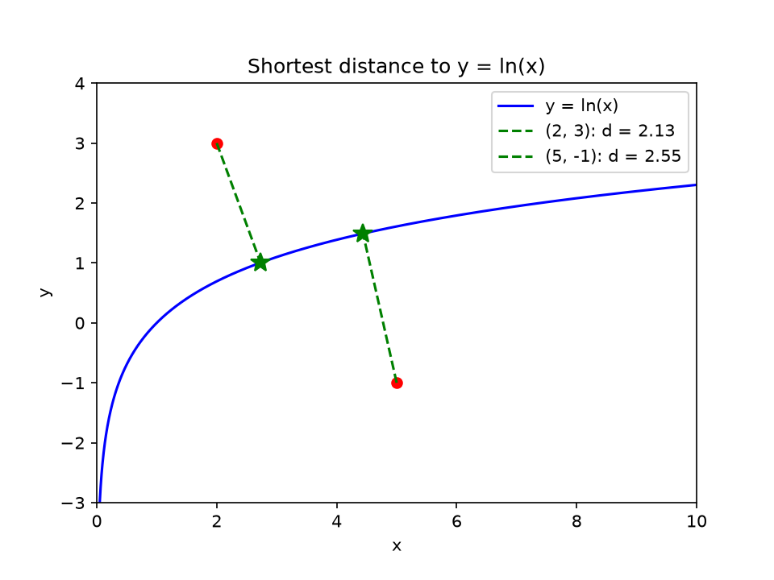
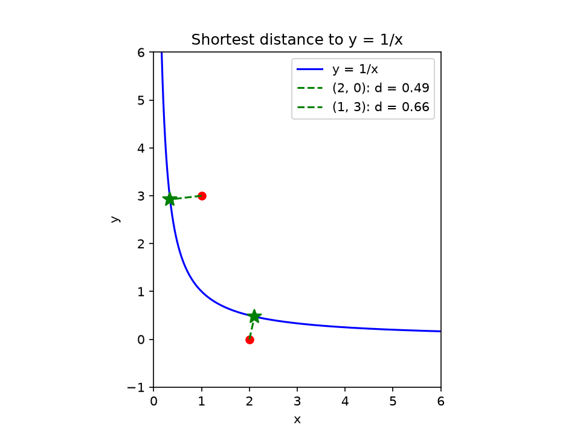

1. Part 1: Find shortest distance from a point to a function
Given a specific point $(x_0, y_0)$, there are 2 ways to find the shortest
distance from that point to a function $f(x)$ - analytically (using
calculus) or numerically (using iterative algorithms). This project will
solve both the analytical approach and the numerical approach for the
function $y = x^2 + 5$ and for the points $(0, 0), (-4, 0), (-8, 0), (2,
0), (6, 0)$.
1.1 The Objective Function
The euclidean distance d between a given point $(x_0, y_0)$ and any point
$(x, y)$ on a function's curve is given by: $$d = \sqrt{(x-x_0)^2 + (y -
y_0)^2}$$ However, because a square root is expensive to calculate,
computer algorithms always optimize the squared distance (D) instead.
$$D(x) = (x-x_0)^2 + (f(x)-y_0)^2$$ The goal of this project is to find
the point $x$ that minimizes $D$, which also minimizes $d$ and therefore
gives the shortest possible distance.
1.2 The Analytical Approach
Consider the function $y = f(x) = x^2 + 5$ and a specific point $(x_0,
y_0)$. Since this function is smooth and differentiable throughout its
domain, we can solve for the exact shortest distance using calculus.
First, we take the derivative of the squared distance function $D(x)$,
$$D'(x) = 2(x-x_0) + 2(f(x)-y_0)f'(x)$$ Then, we equate the derivative to
zero to find the critical points, ie the values of $x$ for which $D(x)$ is
minimum. $$ \begin{aligned} D'(x) &= 0 \\ &\implies 2(x-x_0) +
2(f(x)-y_0)f'(x) = 0 \\ \end{aligned} $$ Simplyfying the expression and
solving for x, we get, $$x = x_0 - f'(x)(f(x)-y_0)$$ For the given
function $f(x) = x^2 + 5$, it's derivative is $f'(x) = 2x$. Substituting
these values in the above expression, we have, $$ \begin{aligned} x &= x_0
- 2x(x^2 + 5 - y_0) \\ &\implies x = x_0 - 2x^3 - 10x + 2xy_0 \\ &\implies
2x^3 + 11x - 2xy_0 - x_0 = 0 \end{aligned} $$ This gives the main equation
that will be used to determine the minimum distance for each point in the
analytical approach. $$ \boxed{2x^3 + 11x - 2xy_0 - x_0 = 0} \tag{1} $$
For each point $(x_0, y_0)$, the general process is to substitute the
values of $x_0$ and $y_0$ into Equation (1). This gives the value of $x$
for which $D(x)$, and hence $d$, is minimized. The resulting value of $x$
is then substituted back into the original distance formula to obtain the
minimum distance.
1.2.1 Analytical Solutions
The numpy.roots() function is used to solve Equation (1) for
each given point. The resulting real root is the value of $x$ that
minimizes $D(x)$, which is then substituted into the distance formula to
obtain the minimum distance.
Point $(0, 0)$
$x_0 = 0,\quad y_0 = 0$
Substituting $(0, 0)$ into Equation (1) yields:
$$2x^3 + 11x = 0$$
The real root is $x^* = 0$. Substituting into the distance formula:
$$d = \sqrt{(0 - 0)^2 + (f(0) - 0)^2}$$
Since $f(0) = 0^2 + 5 = 5$, this becomes:
$$d = \sqrt{(0 - 0)^2 + (5 - 0)^2} = 5$$
Point $(-4, 0)$
$x_0 = -4,\quad y_0 = 0$
Substituting $(-4, 0)$ into Equation (1) yields:
$$2x^3 + 11x + 4 = 0$$
The real root is $x^* \approx -0.355$. Substituting into the distance
formula:
Table 1 summarizes the analytical results. These values serve as the
reference when comparing against the numerical approach.
Table 1: Analytical results for each point
Point $(x_0, y_0)$
Real root $x^*$
Minimum distance $d$
$(0, 0)$
$0$
$5$
$(-4, 0)$
$\approx -0.355$
$\approx 6.29$
$(-8, 0)$
$\approx -0.672$
$\approx 9.13$
$(2, 0)$
$\approx 0.181$
$\approx 5.35$
$(6, 0)$
$\approx 0.520$
$\approx 7.60$
1.3 Numerical Approach
Solving $D'(x) = 0$ symbolically can be impossible when $f(x)$ is
complicated. Numerical root-finding and optimization algorithms avoid this
by approximating the minimizer iteratively. Two algorithms are used here.
1.3.1 Algorithm A: Newton-Raphson Method
If the first and second derivatives of $f(x)$ are easy to compute,
Newton's method can be applied to $D'(x) = 0$. With $D(x) = (x - x_0)^2 +
(f(x) - y_0)^2$:
Converges to $x^* \approx 0.5199$, giving $d \approx 7.60$, which
matches the analytical result.

Figure 5a: Iterates for $(6, 0)$.

Figure 5b: Shortest distance from $(6, 0)$.
1.3.3 Other Functions and Non-Polynomial Cases
find_distance_newton takes $f$, $f'$ and $f''$ as inputs, so
the same routine works for any twice-differentiable function, and only the
three function definitions change. Three more cases are shown below: a
cubic polynomial, an exponential, and a radical function. The radical case
needs a positive initial guess, since $f'(x)$ is undefined at $x = 0$.
Point $(4, 0)$: $x^* = 3.5000$, closest point $(3.5000,\ 1.8708)$, $d
\approx 1.9365$
Point $(2, 3)$: $x^* \approx 2.4570$, closest point $(2.4570,\
1.5675)$, $d \approx 1.5036$

Figure 8: Shortest distance to $f(x) = \sqrt{x}$.
Newton's method converges to a local minimum of $D(x)$ near the initial
guess, so for curves like the cubic, which can have more than one, the
result depends on where the iteration starts. The points above converge to
the true minimum.
1.3.4 Algorithm B: Golden Section Search
If the derivatives of $f(x)$ are unknown but the search can be restricted
to an interval $[a, b]$ containing the minimum, Golden Section Search
finds the minimum of $D(x) = (x - x_0)^2 + (f(x) - y_0)^2$ using only
function values. It requires $D$ to have a single minimum inside $[a, b]$.
Two interior points are placed using the golden ratio $\varphi = \frac{1 +
\sqrt{5}}{2}$, with $\text{resphi} = 2 - \varphi \approx 0.3820$:
$$x_1 = a + \text{resphi}\,(b - a), \qquad x_2 = b - \text{resphi}\,(b -
a)$$
If $D(x_1) < D(x_2)$ the minimum lies in $[a, x_2]$, so $b = x_2$;
otherwise it lies in $[x_1, b]$, so $a = x_1$. Each step shrinks the
interval by a factor of about $0.618$ and reuses one interior point, so
only one new evaluation of $D$ is needed per iteration. The search stops
when $b - a$ falls below a tolerance, and the result is the midpoint $x^*
= (a + b)/2$.
import math
def golden_section_search(x0, y0, f, a, b, tolerance=1e-7):
phi = (1 + math.sqrt(5)) / 2
resphi = 2 - phi
x1 = a + resphi * (b - a)
x2 = b - resphi * (b - a)
def dist_sq(x): return (x - x0)**2 + (f(x) - y0)**2
f_x1 = dist_sq(x1)
f_x2 = dist_sq(x2)
while abs(b - a) > tolerance:
if f_x1 < f_x2:
b = x2
x2 = x1
f_x2 = f_x1
x1 = a + resphi * (b - a)
f_x1 = dist_sq(x1)
else:
a = x1
x1 = x2
f_x1 = f_x2
x2 = b - resphi * (b - a)
f_x2 = dist_sq(x2)
best_x = (a + b) / 2
return math.sqrt(dist_sq(best_x)), best_x
1.3.5 Hand Calculation for $f(x) = x^2 + 5$
For $y_0 = 0$, $D(x) = (x - x_0)^2 + (x^2 + 5)^2$. Since $D''(x) = 12x^2 +
22 > 0$ (Section 1.3.2), $D$ has a single minimum, as the method
requires. Every run searches the interval $[a, b] = [-2, 2]$.
Continuing until $b - a < 10^{-7}$ gives $x^* \approx 0.5199$, $d
\approx 7.60$, which matches the analytical result.

Figure 13a: Bracket shrinking for $(6, 0)$.Figure 13b: Shortest distance from $(6, 0)$.
1.3.6 Other Functions and Non-Polynomial Cases
golden_section_search only needs $f$ itself and a search
interval $[a, b]$, so no derivatives are required. Three more cases are
shown: a quartic polynomial, a logarithmic function, and a function with a
variable in the denominator. The last two are only defined for $x > 0$,
so their interval starts slightly above zero.
Polynomial: $f(x) = \frac{1}{4}x^4 - x^2$
Search interval: $[-4, 4]$.
Point $(3, 0)$: $x^* \approx 2.0496$, closest point $(2.0496,\
0.2107)$, $d \approx 0.9735$
Point $(-3, -1)$: $x^* \approx -1.8343$, closest point $(-1.8343,\
-0.5344)$, $d \approx 1.2552$

Figure 14: Shortest distance to $f(x) = \frac{1}{4}x^4 - x^2$.
Logarithmic: $f(x) = \ln x$
Search interval: $[0.05, 10]$.
Point $(2, 3)$: $x^* \approx 2.7307$, closest point $(2.7307,\
1.0046)$, $d \approx 2.1250$
Point $(5, -1)$: $x^* \approx 4.4390$, closest point $(4.4390,\
1.4904)$, $d \approx 2.5528$

Figure 15: Shortest distance to $f(x) = \ln x$.
Reciprocal: $f(x) = \frac{1}{x}$
Search interval: $[0.05, 10]$.
Point $(2, 0)$: $x^* \approx 2.1069$, closest point $(2.1069,\
0.4746)$, $d \approx 0.4865$
Point $(1, 3)$: $x^* \approx 0.3421$, closest point $(0.3421,\
2.9230)$, $d \approx 0.6624$

Figure 16: Shortest distance to $f(x) = \frac{1}{x}$.
Golden Section Search assumes $D$ has a single minimum inside $[a, b]$.
For a curve with more than one well, like the quartic, the interval and
points have to be chosen so that only one minimum is in range; otherwise
the method may converge to a different local minimum. The cases above
satisfy this.
2. Part 2: Fitting to an equation
We are given the points $(0, 0.5)$, $(2, 3.5)$, $(1, 1.5)$, $(3, 7.5)$,
and want to fit a line $y^*(x) = c_0 + c_1 x$, and a parabola $y^*(x) = c_0 + c_1x + c_2x^2$
by minimizing the min squared error of the fitted functions.
2.1 Fitting a line
The error at each point is:
$$e(x) = y^*(x) - y(x) = c_0 + c_1 x - y(x)$$
We want $c_0, c_1$ that minimize the min squared error over all
points: